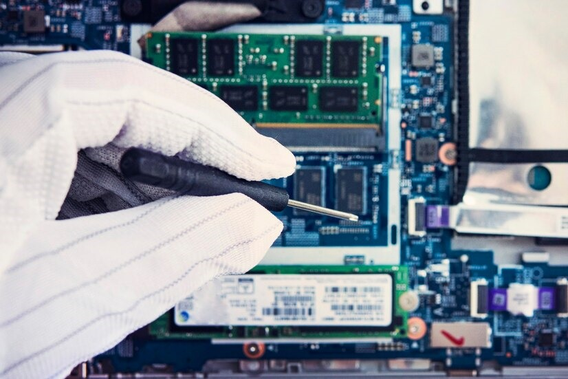
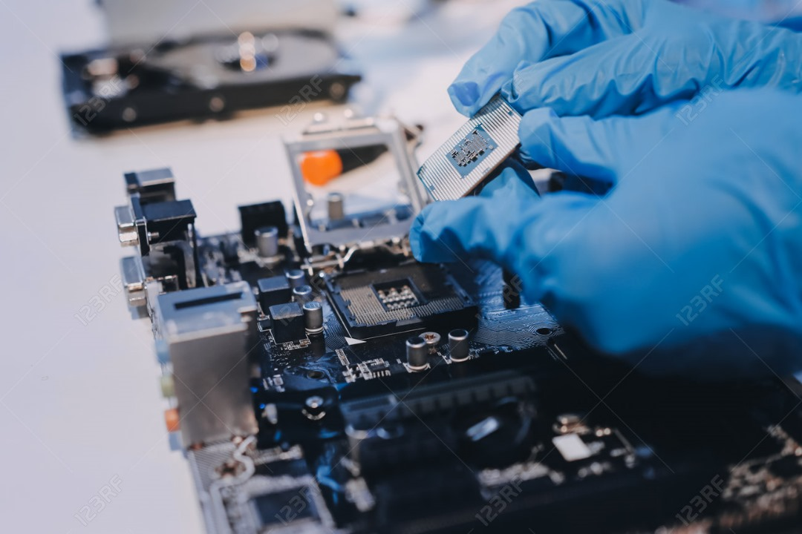
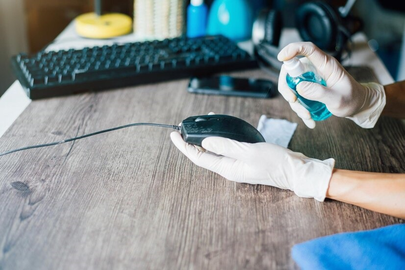
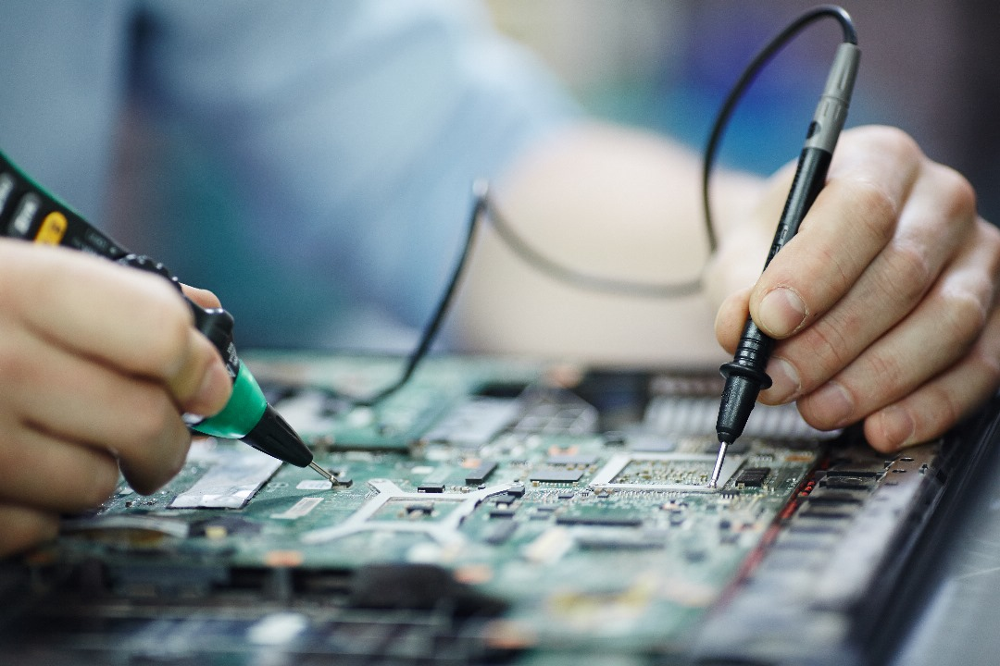

INTRODUCCIÓN
OBJETIVOS
DESARROLLO
GLOSARIO
BIBLIOGRAFÍA
CONCLUSIÓN
RECOMENDACIONES

Recomendaciones para el Mantenimiento de Hardware y Software
Para garantizar un rendimiento óptimo y extender la vida útil de los equipos de cómputo, es importante seguir ciertas recomendaciones en cuanto a su mantenimiento. Estas recomendaciones aplican tanto para el mantenimiento preventivo como para el correctivo:

1. Realizar mantenimiento preventivo regularmente: Se recomienda llevar a cabo un mantenimiento preventivo al menos dos veces al año, o con mayor frecuencia si el equipo está expuesto a condiciones desfavorables, como polvo o calor excesivo. Esto ayudará a prevenir fallas y mejorar el rendimiento general del equipo.
2. Mantener el equipo limpio: La limpieza regular es esencial para evitar la acumulación de polvo y suciedad en los componentes internos del hardware, como el ventilador, la tarjeta madre y los discos duros. Utilizar aire comprimido para limpiar las partes internas es una forma segura de hacerlo. También se deben limpiar regularmente las superficies externas.

3. Actualizar software y sistema operativo: Mantener el sistema operativo y el software de los equipos actualizados es clave para protegerlos de vulnerabilidades y mejorar su seguridad. Esto incluye instalar parches de seguridad y actualizaciones de los programas utilizados.
4. Instalar y actualizar antivirus: Es fundamental contar con un software antivirus actualizado para proteger los equipos de virus, malware y otras amenazas. Realizar análisis de seguridad periódicos también es una buena práctica.
5. Realizar copias de seguridad: Es recomendable hacer copias de seguridad regulares de los datos importantes. Esto protegerá la información ante posibles fallos del sistema o pérdida de datos debido a virus o errores.

6. Evitar condiciones extremas: No exponga el equipo a la luz solar directa, lugares húmedos o cerca de equipos que generen campos magnéticos, como altavoces o microondas, ya que pueden afectar tanto el hardware como el software.
7. Monitorear el rendimiento del equipo: Prestar atención a señales de que el equipo pueda estar fallando, como ruidos extraños, lentitud en el rendimiento o errores constantes. Estas señales pueden indicar problemas que deben ser tratados con mantenimiento correctivo antes de que se agraven.
8. Cuidado con los periféricos: Los periféricos como teclados, ratones y monitores también deben mantenerse en buen estado. Si presentan fallas, es más rentable reemplazarlos que repararlos en algunos casos.
‹
›
‹
›
‹
›
‹
›
‹
›
•
•
•
•
•